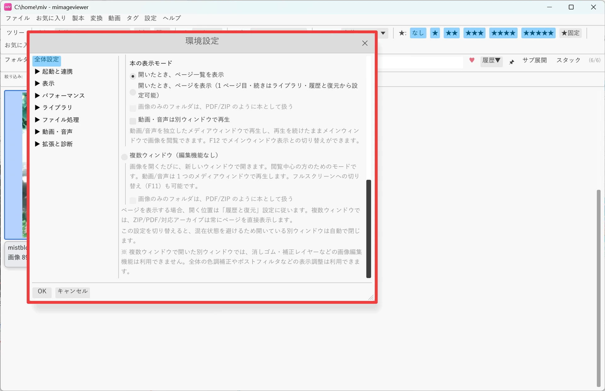
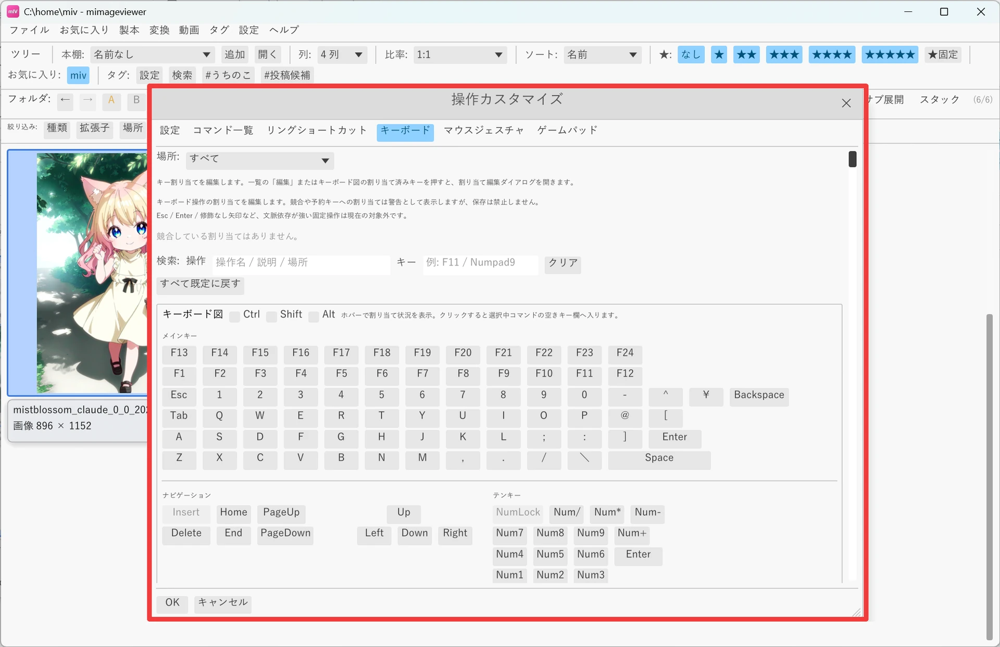
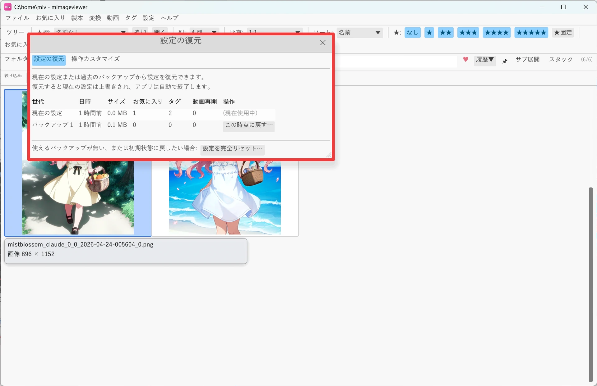

環境設定と操作カスタマイズ
使い始めにまず開いておきたいのが環境設定ダイアログです。テーマや AI 機能の使い方、 ZIP・PDF の開き方（ビューワモード）といった基本項目がここに集まっています。あわせて、 キー割り当てを自分好みに変える「操作カスタマイズ」と、変えた設定をいつでも元に戻す方法も見ていきます。
環境設定ダイアログを開く
メニューバーの「設定」→「環境設定…」を選ぶと、全体設定・起動と連携・表示・パフォーマンス・ ライブラリ・ファイル処理・動画・音声・拡張と診断など、すべての設定を統合したダイアログが開きます。 左側のツリーからカテゴリを選んで切り替える構成です。
最初に見ておきたい項目
項目は多いですが、最初に確認しておくとよいのは次の 3 つです。
| 項目 | 場所 | 内容 |
|---|---|---|
| テーマ | 環境設定 → 全体設定 | システム / ライト / ダーク。システムは Windows のテーマ設定に追従し、起動後に切り替えても自動で反映されます。 |
| ビューワモード（ZIP・PDF の開き方を含む） | 環境設定 → 全体設定 | フル機能ウィンドウ（画像編集機能あり。本はページ一覧を開くか直接ページを表示するか選べる）または複数ウィンドウ（開くたびに新しい別ウィンドウ。本は常にページを直接表示）。 |
| AI 機能 | 環境設定 → 全体設定 | なし / 軽量 / 高画質。軽量はミドルレンジ GPU 向けで高速汎用・漫画トーン保持モデルのみ、高画質はハイエンド GPU 向けで全アップスケールモデルとノイズ除去を使います。 |

操作カスタマイズでキー割り当てを変える
メニューバーの「設定」→「操作カスタマイズ…」では、キーボード操作、右ドラッグ、リングショートカット、 マウスジェスチャ、マウスボタンの割り当てをまとめて変更できます。上部のタブで設定対象を切り替える、 環境設定とは別の大きめのダイアログです。
- コマンド一覧タブ：キーボード・リング・マウス・ゲームパッドに割り当てられている操作を 1 つの表で確認できます。「編集」から割り当て編集ダイアログを開きます。
- キーボードタブ：文脈ごとのコマンド一覧と、日本語キーボード風の簡易キーボード図を表示します。キーをクリックすると、そのキーに割り当てる操作を選べます。
- キーの入力：Ctrl+F のような形式で直接入力するほか、「押して入力」で次に押したキーをそのまま取り込めます。1 つの操作には最大 3 つまでキーを登録できます。
- 解除・初期化：各キー行の「解除」でその割り当てだけを外せます。「既定に戻す」で選択中の操作を標準の割り当てに戻せます。
同じ場面で同じキーが重複している場合や、固定扱いのキーと衝突する場合は警告が表示されます。 保存自体は止まらないので、競合が出たら該当の操作を開いて片方を変更するか解除してください。

変えた設定はいつでも元に戻せる
設定はいろいろ試して大丈夫です。メニュー「設定」→「設定の復元…」を開くと、変更前の状態へ戻したり、 初期状態にまっさらリセットしたりできます。上部の 2 つのタブで、戻す範囲を選べます。
| できること | 内容 |
|---|---|
| 設定をまるごと戻す （「設定の復元」タブ） | 環境設定・お気に入り・タグ・動画の再開位置などを含めた設定全体を、現在の設定や過去の自動バックアップ世代から丸ごと復元します。「この時点に戻す…」で戻すと、いったんアプリが自動で終了し、次回起動時に反映されます。 |
| キー割り当てだけ戻す （「操作カスタマイズ」タブ） | キー割り当て・リング / マウス・メニュー構成だけを、標準や前の世代と見比べて戻します。環境設定やお気に入りはそのままで、キー周りだけをピンポイントに元へ戻したいときに使います。 |
| 初期状態に戻す （完全リセット） | 「設定を完全リセット…」で、すべての設定を初回起動直後の状態へ戻します。使えるバックアップが無いときや、一度まっさらにやり直したいときに使います。 |
